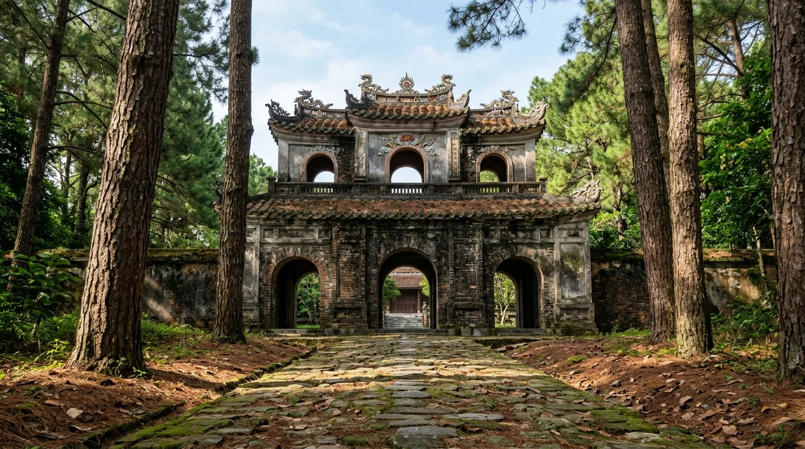

🧭 1. Tổng Quan Tổ Đình Từ Hiếu & Giai Thoại Chí Hiếu Cảm Động Vua Tự Đức
Năm 1843, Hòa thượng Nhất Định — nguyên Tăng cang chùa Giác Hoàng trong Kinh thành — xin cáo quan lui về đồi Dương Xuân lập Thảo am An Dưỡng để chuyên tâm tịnh tu và phụng dưỡng mẹ già gần trăm tuổi. Tương truyền và lưu chép trong sử tự, khi mẹ già lâm bệnh nặng cần bồi bổ, vị thiền sư tuổi ngoài sáu mươi chẳng nề thị phi thế gian, chống gậy lội bộ hơn 5km ra chợ mua cá tươi đem về tự tay nấu cháo dâng mẹ. Câu chuyện thấu đến tai vua Tự Đức — một vị vua nổi tiếng hiếu thảo với Từ Dụ Thái hậu; vô cùng cảm phục, năm 1848 nhà vua đã ban tấm biển "Sắc tứ Từ Hiếu Tự" (Từ là lòng từ bi rộng lớn, Hiếu là hiếu thảo vẹn toàn).
Cùng năm 1848 và đợt trùng tu năm 1894, các vị Thái giám triều Nguyễn (đứng đầu là Thái giám Châu Phước Năng) đã phát tâm quyên góp mở rộng chùa thành ngôi già lam nhà rường chữ Khẩu khang trang để có nơi nương tựa tâm linh lúc tuổi xế chiều và gửi thân sau khi tạ thế — hình thành nên khu nghĩa trang khoảng 25 ngôi mộ Thái giám độc nhất vô nhị tại Việt Nam ngay bên đồi chùa. Từ Hiếu còn là ngôi chùa gốc nơi Thiền sư Thích Nhất Hạnh (1926–2022) xuất gia tu học năm 1942 lúc 16 tuổi, trở về tịnh dưỡng tại Thất Lắng Nghe từ cuối năm 2018 và viên tịch ngày 22/01/2022 trong sự tĩnh lặng chánh niệm.
📜 2. Nếp Chánh Niệm & Tôn Trọng Sự Tĩnh Lặng Của Tổ Đình
Tổ đình Từ Hiếu hiện vẫn là nơi tu học thường nhật của chư Tăng với nếp thiền hành tỉnh thức rất mực trang nghiêm, nhẹ nhàng. Du khách ghé thăm xin lưu tâm:
🏮 3 Quy Chuẩn Chánh Niệm Khi Viếng Chùa Từ Hiếu
🤫 Giữ Im Lặng Hùng Tráng (Chánh Niệm Hơi Thở)
Từ Hiếu không có cảnh ồn ào khấn vái lớn tiếng: hãy bước chậm như đang hôn mặt đất bằng bàn chân, nói khẽ, tắt chuông điện thoại và tuyệt đối không bước qua hàng rào khu nội viện chư Tăng (Thất Lắng Nghe).
🐟 Không Cho Cá Ăn Tùy Tiện & Không Đốt Vàng Mã
Đàn cá dưới hồ bán nguyệt được nhà chùa chăm sóc theo giờ cố định: không ném bánh kẹo lạ làm đục nước hồ, không đốt vàng mã và chỉ thắp 1 nén hương trầm Huế thanh nhẹ ngoài lư đồng.
🌲 Tôn Kính Khu Lăng Mộ Thái Giám Triều Nguyễn
Khi dạo qua đồi mộ cổ các vị Thái giám bên phải chùa, giữ thái độ trân trọng lịch sử: không ngồi hay giẫm lên thành mộ vôi vữa cổ, không xả rác dưới rừng thông.
⛩️ 3. Lộ Trình 6 Trạm Thiền Hành Rừng Thông Từ Hiếu
Lộ trình 6 trạm dẫn bước hành giả từ cổng vòm rêu phong xuyên dưới rừng thông, dừng chân bên hồ bán nguyệt, lễ Phật tại Chánh điện nhà rường, thực tập hơi thở chánh niệm bên hiên Thất Lắng Nghe, viếng đồi mộ cổ Thái giám và ghé làng hương Thủy Xuân.
Hành Trình Chánh Niệm & Báo Hiếu — Tổ Đình Từ Hiếu
Thực tập bước chân an lạc giữa đồi thông Dương Xuân, lắng nghe tiếng chuông chánh niệm xứ Huế và dâng lời cầu nguyện sức khỏe cho hai đấng sinh thành.

Men theo con dốc đất phủ đầy lá thông khô rì rào trong gió sớm, du khách bắt gặp cổng Tam Quan xây gạch vôi vữa 2 tầng mái uốn cong khảm sành sứ cổ kính đặc trưng xứ Huế, mở lối vào thế giới tĩnh lặng của Tổ đình Từ Hiếu.
🏛️ Nét Đẹp Cổng Chùa Cổ Cố Đô
- Cổng xây kiểu vòm cuốn vôi ô dước màu xám rêu trầm mặc, hai tầng lợp ngói liệt âm dương gắn lưỡng long chầu nguyệt khảm sành.
- Con khe suối cạn uốn quanh chân đồi thông tạo thế phong thủy hữu tình của vùng đất Dương Xuân Thượng xưa.
- Khi qua cổng không nói chuyện lớn tiếng để giữ nguyên tiếng chim hót và thông reo.
🌲 Rừng Thông Xanh Quanh Năm
- Buổi sáng sớm từ 06h30 đến 08h30 khi sương mỏng còn vương trên thân thông là khoảnh khắc đẹp nhất tại Từ Hiếu.
- Trang phục nhã nhặn (áo dài tím/lam, sơ mi kín đáo) rất hài hòa với sắc rêu cổ tự.
- Chùa không thu bất kỳ khoản phí vé vào cửa nào.
CHỨNG NHẬN THIỀN HÀNH TỔ ĐÌNH TỪ HIẾU VIÊN MÃN
Chúc mừng bạn đã hoàn thành trọn vẹn lộ trình thiền hành 6 trạm tại Sắc tứ Từ Hiếu Tự & làng hương Thủy Xuân (Cố đô Huế). Nguyện cầu ánh sáng Từ Bi và Đạo Hiếu luôn sưởi ấm gia đình bạn, cho cha mẹ bình an trường thọ, thân tâm thường an trú trong giây phút hiện tại.
🧭 4. Lịch Trình 1 Ngày Rừng Thông Từ Hiếu — Làng Hương Thủy Xuân
Hành trình 1 ngày lắng đọng nơi phía Tây Nam Cố đô Huế (cách trung tâm Đại Nội ~5km, cách Hà Nội ~675km):
Buổi Sáng (07h30 – 11h00): Thiền Hành Rừng Thông, Hồ Bán Nguyệt & Chánh Điện Từ Hiếu
- 07h30: Đón nắng sớm mờ sương trên con dốc thông đường Lê Ngô Cát, bước qua cổng vòm Tam Quan rêu phong.
- 08h15: Dừng chân ngắm cá lội dưới hồ bán nguyệt, vào lễ Phật tại Chánh điện nhà rường Huế chữ Khẩu và hậu tổ thờ Thiền sư Nhất Định.
- 09h45: Thực tập thiền hành chậm rãi quanh lối thông bên ngoài khuôn viên Thất Lắng Nghe và tìm hiểu lịch sử tại khu lăng mộ cổ các vị Thái giám triều Nguyễn.
Buổi Trưa (11h15 – 13h30): Cơm Chay Xứ Huế Thanh Nhã & Trà Sen Tịnh Tâm
Thưởng thức mâm cơm chay cổ truyền xứ Huế thanh tao với vả trộn mè rang, nấm tràm kho tiêu, bánh bèo – bánh nậm chay gói lá chuối xanh và chén trà sen thơm dịu.
Buổi Chiều (14h00 – 17h00): Làng Nghề Hương Trầm Thủy Xuân 700 Năm Tuổi & Đồi Vọng Cảnh
- 14h00: Tản bộ ra làng hương Thủy Xuân ngay trục đường Huyền Trân Công Chúa – Lê Ngô Cát, tự tay se những nén hương trầm, hương quế mộc mạc từ bột vỏ bời lời và trầm hương tự nhiên.
- 16h00: Ngắm hoàng hôn buông tím trên khúc quanh mềm mại của dòng sông Hương nhìn từ đồi Vọng Cảnh gần đó.